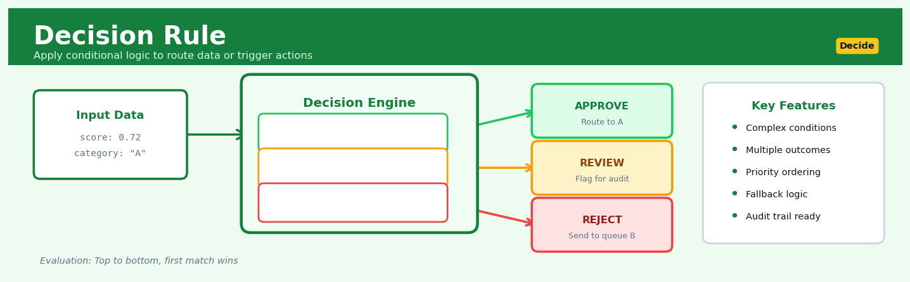
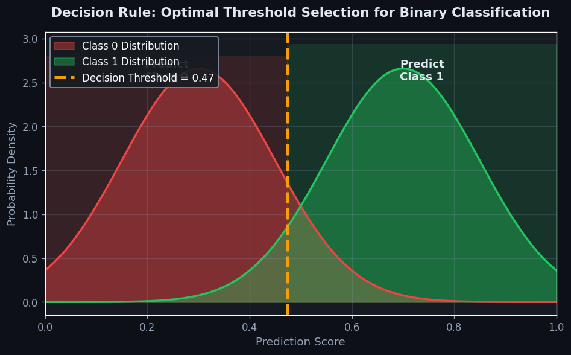
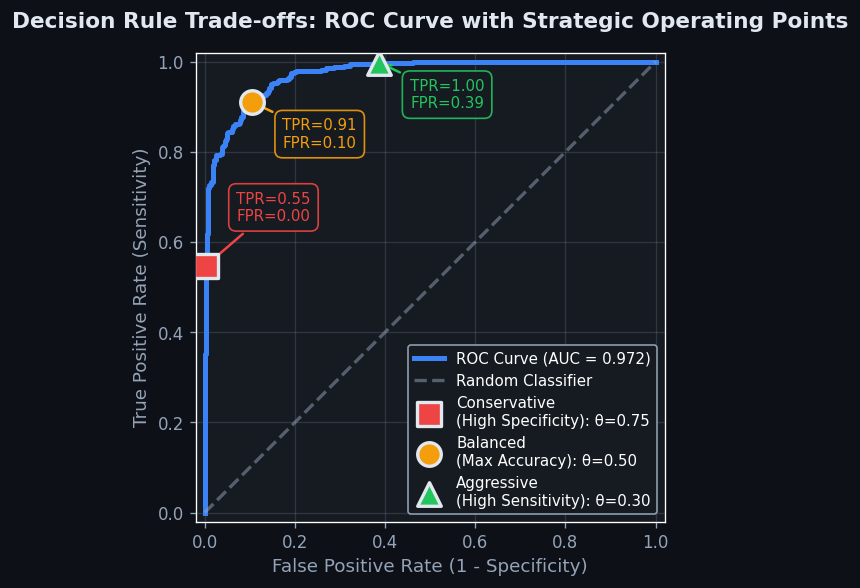

Decision Rule#


Decision Rule is a core transformation in the Decide workflow.
The 60-Second Version#
What it does: A decision rule automatically tells you which action to take for each observation based on predictions, costs, and benefits.
When to use it: When you need to convert model predictions into consistent, defensible actions that account for the different consequences of being right or wrong.
What you get back: A clear directive for every case—approve/reject, intervene/monitor, buy/sell/hold—optimized for your stated business objective, not just prediction accuracy.
At a Glance
Difficulty |
Easy to Moderate |
Typical runtime |
Milliseconds once costs are specified |
What you bring |
Predictions or probabilities, plus costs/benefits of each action under each outcome |
What you get |
A specific action recommendation for each observation |
Heuristix bucket |
Decide — Decision Intelligence |
A model that’s 90% accurate can still lose money if you don’t account for the asymmetric costs of different mistakes when choosing actions.
Learning Objectives#
After reading this chapter, a business user will be able to:
Identify situations where decision rules add value beyond raw predictions—such as when actions have asymmetric costs, compliance constraints exist, or multiple stakeholders require transparent decision rationale.
Interpret a decision rule’s recommendation alongside its confidence threshold, expected cost, and sensitivity to input changes, then communicate these trade-offs clearly to executives and operational teams.
Use decision rule outputs to take defensible actions in high-stakes scenarios like credit approval, medical triage, or inventory allocation, including knowing when to escalate edge cases for human review.
After reading this chapter, a data scientist will be able to:
Implement decision rules by combining probabilistic model outputs with cost matrices, utility functions, and business constraints to produce optimal action mappings.
Calibrate decision thresholds and policy parameters by analyzing precision-recall curves, expected value trade-offs, and fairness metrics to balance competing business objectives.
Validate decision rule performance through backtesting on holdout data, stress-testing against distribution shift, and diagnosing failures like threshold miscalibration or cost matrix misspecification.
Overview#
A decision rule is a formal mapping from observed data to an action or recommendation that optimises a specified objective under uncertainty. Decision rules constitute the operational endpoint of decision intelligence: they translate probabilistic model outputs—predictions, posterior distributions, or risk scores—into concrete, actionable directives such as “approve this loan,” “schedule maintenance on this asset,” or “target this customer with offer A.” As a core technique in prescriptive analytics and statistical decision theory, decision rules bridge inferential statistics with operational decision-making by explicitly incorporating costs, benefits, and business constraints into the action-selection process.
When to Use This#
Use this when you have a predictive model and need to operationalise it: You have built a classifier or regression model and must determine the threshold or rule that converts scores into binary or categorical actions (e.g., accept/reject, treat/no-treat).
Use this when asymmetric costs exist: The cost of a false positive differs substantially from the cost of a false negative—for instance, approving a fraudulent transaction versus rejecting a legitimate one.
Use this when business constraints must be satisfied: You need to ensure that no more than a certain fraction of applications are approved, or that a minimum recall is maintained for regulatory compliance.
Use this when multiple actions are available: The decision is not simply binary but involves selecting among several interventions, each with distinct expected outcomes.
Use this when you need reproducible, auditable decisions: Regulatory or governance requirements demand that decisions follow an explicit, documented rule rather than ad hoc judgment.
Use this when the decision problem is repeated at scale: Automated systems must process thousands or millions of decisions consistently—manual review is infeasible.
Do NOT use this when the underlying model is poorly calibrated: A decision rule inherits the quality of its input probabilities; if predicted probabilities do not reflect true frequencies, the rule will be suboptimal.
Do NOT use this when costs and benefits are unknown or unquantifiable: Without a clear utility or loss function, there is no principled basis for selecting one rule over another.
Do NOT use this when human judgment is irreplaceable: Some decisions involve ethical, legal, or contextual nuances that cannot be captured in a simple mapping from scores to actions.
Questions This Answers#
Resource Allocation and Prioritization#
Should we approve this loan application, or is the default risk too high given our current portfolio exposure?
Which 500 customers should our sales team call this month to maximize revenue with limited headcount?
Do we invest in preventive maintenance now or wait—what’s the break-even point given downtime costs and failure probability?
Should we offer this customer the premium upgrade, the standard package, or nothing at all?
Which insurance claims should we fast-track for automatic approval versus sending to manual review?
Operational Thresholds and Cutoffs#
At what inventory level should we trigger a reorder—too early wastes capital, too late causes stockouts?
What credit score threshold should we use for auto-approval if we want to keep defaults under 3% while maximizing volume?
How long should we wait before intervening on a late-paying account—3 days, 7 days, or 14 days?
Should we accept this return request automatically or flag it for fraud review based on the customer’s history?
At what confidence level do we trust the model’s recommendation enough to act without human oversight?
Trade-offs and Policy Design#
What’s more costly: rejecting good customers or approving bad ones—and how should that change our approval strategy?
If we tighten our risk criteria, how many profitable customers will we lose versus how much bad debt will we avoid?
Should we prioritize speed or accuracy in our treatment decisions when both matter but we can’t optimize for both?
How do we balance fairness requirements with profitability when setting eligibility rules for our product?
How It Works#
Imagine you’re a doctor in an emergency room facing a patient with chest pain. You don’t just guess—you follow a protocol. If the pain is crushing and radiates down the left arm, and the patient is over 50, and their blood pressure is elevated, you immediately activate the cardiac team. If the pain is sharp and changes with breathing, you order different tests. You’re not making arbitrary choices; you’re applying a decision rule that maps specific combinations of symptoms (your data) to specific actions (your decisions), informed by decades of medical research about which actions save the most lives under which conditions. That’s exactly what a formal decision rule does in business: it takes the uncertainty captured in your predictions and converts it into the single best action, given what you know and what you care about.
PREDICTION MODEL OUTPUT DECISION RULE FINAL ACTION
┌─────────────────────┐
│ Customer #4782 │ ┌─────────────┐
│ Churn risk: 0.73 │──────────→ │ IF risk > 0.7│
│ Lifetime value: $840│ │ AND value > │
└─────────────────────┘ │ $500 │
│ THEN: Offer │──────→ ✓ Send 20%
┌─────────────────────┐ │ retention │ discount
│ Customer #4783 │──────────→ │ discount │ coupon
│ Churn risk: 0.68 │ │ │
│ Lifetime value: $220│ │ ELSE: Do │──────→ ✗ No action
└─────────────────────┘ │ nothing │
└─────────────┘
↑
│
┌───────────┴──────────┐
│ Business constraints: │
│ • Discount costs $15 │
│ • Budget: 5000 coupons│
└──────────────────────┘
Step 1: Start with probabilistic predictions. Your machine learning model has already done its job—it’s produced predictions with uncertainty attached. For each customer, you might have a probability of churn, an expected revenue forecast, or a risk score. These are just numbers describing what might happen, not instructions about what to do.
Step 2: Define all possible actions. You enumerate every action you could take: send a discount, do nothing, escalate to sales, reject the application, schedule maintenance now versus later. Each action has real-world consequences—costs, benefits, risks.
Step 3: Assign value to each outcome. For every combination of prediction and action, you quantify what happens. If you offer a discount to a high-risk customer and they stay, you gain their lifetime value minus the discount cost. If you offer a discount and they leave anyway, you just wasted money. If you do nothing and they stay, you keep their value at no cost. These values come from your business reality—profit margins, operational costs, strategic priorities.
Step 4: Calculate expected value for each action. For each possible action, you compute the weighted average outcome across all scenarios, using your prediction probabilities as weights. This tells you: “Given the uncertainty in my prediction, which action gives me the best expected return?”
Step 5: Select the action with optimal expected value. The decision rule picks whichever action scores highest. This might be “offer discount” for high-risk, high-value customers, but “do nothing” for low-value customers where the intervention cost exceeds potential benefit.
Step 6: Encode the rule for automatic deployment. Once optimized, the decision rule becomes an automated policy: a lookup table, a set of if-then conditions, or a threshold that operations can apply instantly to every new case without re-computing.
The key insight: Decision rules work because they formalize the trade-off between the cost of being wrong and the benefit of being right, letting you squeeze maximum business value from uncertain predictions by systematically choosing actions that win on average across all possible futures.
The Intuition#
Imagine you are a physician deciding whether to prescribe an aggressive treatment to a patient based on a diagnostic test. The test returns a probability that the patient has a serious condition. If you treat everyone with any positive probability, you will subject many healthy patients to harmful side effects. If you treat no one, some genuinely ill patients will suffer. The optimal strategy depends on the relative severity of these two errors: the harm of unnecessary treatment versus the harm of missed diagnosis. A decision rule formalises this trade-off by specifying a threshold—say, “treat if the probability exceeds 0.3”—chosen to minimise expected harm given the costs you assign to each type of mistake.
Now extend this reasoning to business settings. A bank evaluating loan applications has a model that predicts the probability of default. Approving a loan that defaults incurs a loss; rejecting a creditworthy applicant forgoes profit. The bank’s decision rule specifies the predicted default probability above which applications are declined. This threshold is not arbitrary—it is derived from the ratio of the cost of a bad loan to the forgone profit of a good loan. If defaults are very costly relative to lost profit, the threshold is low (conservative lending); if profit margins are high and defaults manageable, the threshold rises (aggressive lending).
The power of formalising decision rules lies in making these trade-offs explicit, quantifiable, and auditable. Rather than leaving the threshold to intuition or historical precedent, we derive it mathematically from the business’s own cost structure. This ensures that the decision system is aligned with organisational objectives and can be systematically updated as costs, market conditions, or strategic priorities change.
The Mathematics#
Problem Setup and Notation#
Let \(X \in \mathcal{X}\) denote the feature vector for an observation, and let \(Y \in \{0, 1\}\) denote the true binary state (e.g., default/no default, fraud/legitimate). A predictive model provides the conditional probability:
A decision rule is a function \(\delta: \mathcal{X} \to \mathcal{A}\) mapping features to an action space \(\mathcal{A}\). In the binary case, \(\mathcal{A} = \{0, 1\}\), where action \(a = 1\) might mean “intervene” and \(a = 0\) might mean “do not intervene.”
Loss Function and Expected Loss#
Define the loss function \(L(a, y)\) as the cost incurred when action \(a\) is taken and the true state is \(y\). The canonical \(2 \times 2\) loss matrix is:
\(Y = 0\) |
\(Y = 1\) |
|
|---|---|---|
\(a = 0\) |
\(L_{00}\) |
\(L_{01}\) |
\(a = 1\) |
\(L_{10}\) |
\(L_{11}\) |
Typically, \(L_{00} = L_{11} = 0\) (correct decisions incur no loss), and we write:
\(c_{FP} = L_{10}\): cost of a false positive (action \(a=1\) when \(Y=0\))
\(c_{FN} = L_{01}\): cost of a false negative (action \(a=0\) when \(Y=1\))
The conditional expected loss for action \(a\) given observation \(x\) is:
The Bayes Decision Rule#
The Bayes decision rule selects the action minimising expected loss:
For the binary case with the loss structure above:
The optimal rule chooses \(a = 1\) when \(R(1 \mid x) < R(0 \mid x)\):
Rearranging:
Thus, the Bayes-optimal decision rule is a threshold rule:
where the optimal threshold \(\tau^*\) depends solely on the cost ratio.
Key Result: Optimal Threshold Derivation#
Note
When \(c_{FN} = c_{FP}\), the optimal threshold is \(\tau^* = 0.5\). When false negatives are more costly (\(c_{FN} > c_{FP}\)), the threshold decreases, making the rule more aggressive in predicting the positive class.
Example: If a missed fraud (\(c_{FN}\)) costs £1,000 and a false alarm (\(c_{FP}\)) costs £50, then:
The rule flags any transaction with \(p(x) > 0.048\) for review.
Multi-Action Decision Rules#
When \(\mathcal{A} = \{a_1, a_2, \ldots, a_K\}\), the generalised Bayes rule is:
This extends naturally to multi-class classification and multi-treatment selection problems.
Constrained Decision Rules#
In many applications, constraints must be satisfied. Consider the Neyman-Pearson formulation:
This constrains the false positive rate to be at most \(\alpha\). The Lagrangian is:
The solution is again a threshold rule, but the threshold is chosen to satisfy the constraint rather than derived directly from the cost ratio.
Assumptions#
Well-calibrated probabilities: The decision rule’s optimality depends on \(p(x)\) accurately reflecting \(P(Y=1 \mid X=x)\).
Known loss function: Costs \(c_{FP}\) and \(c_{FN}\) are specified accurately.
Independence: Each observation’s loss is independent of others.
Stationarity: The data-generating process and cost structure remain stable.
Edge Cases#
Degenerate costs: If \(c_{FP} = 0\), then \(\tau^* = 0\) and all observations receive action \(a = 1\). If \(c_{FN} = 0\), then \(\tau^* = 1\) and no observations receive the action.
Tied expected losses: When \(R(0 \mid x) = R(1 \mid x)\), the rule is indifferent; convention typically assigns \(a = 0\).
Relationship to ROC Analysis#
The ROC curve plots true positive rate (TPR) versus false positive rate (FPR) as the threshold varies. Each point on the ROC corresponds to a different decision rule. The optimal threshold under a given cost structure lies on the ROC curve where the iso-cost line:
is tangent to the curve (for convex ROC hulls).
Understanding the Mathematics#
Expected Loss and the Decision Rule#
The equation:
Read it aloud:
The expected loss equals the integral—that is, the weighted sum—of every possible loss value multiplied by the probability of the true state given the data we observed.
What each symbol means:
\(L(a, \theta)\) = the penalty we pay if we choose action \(a\) when the truth is \(\theta\)
\(a\) = the action we’re considering (e.g., “approve the loan”)
\(\theta\) = the true underlying state of the world (e.g., “customer will default”)
\(X\) = the observed data (credit score, income, payment history)
\(p(\theta | X)\) = how likely state \(\theta\) is, given what we’ve observed
\(\mathbb{E}[\cdot]\) = expected value (the probability-weighted average)
\(\int \cdots d\theta\) = sum across all possible true states
A concrete numerical example:
A bank decides whether to approve a \(10,000 loan. There are two states: the customer repays (probability 0.85 given their data) or defaults (probability 0.15). If we approve and they default, we lose \)10,000. If we reject and they would have repaid, we lose $200 in foregone profit.
Expected loss of approving = \(0 × 0.85 + \)10,000 × 0.15 = $1,500
Expected loss of rejecting = \(200 × 0.85 + \)0 × 0.15 = $170
The decision rule: approve only if expected loss of approving < expected loss of rejecting. Here, \(1,500 > \)170, so reject.
Why this equation matters:
Without computing expected loss across uncertain outcomes, we’d either act on gut feeling or freeze in the face of uncertainty—this formula lets us choose the action that minimizes average regret.
The Optimal Decision Rule#
The equation:
Read it aloud:
The optimal decision rule is the action that achieves the minimum expected loss, chosen from all available actions in our action set.
What each symbol means:
\(\delta^*(X)\) = the best decision rule: the action we should take given data \(X\)
\(\arg\min\) = “the argument (action) that minimizes” (find which action gives the smallest value)
\(a \in \mathcal{A}\) = considering all actions \(a\) in our allowed set \(\mathcal{A}\)
\(\mathbb{E}[L(a, X)]\) = the expected loss for action \(a\) (from the previous equation)
A concrete numerical example:
A hospital must decide: discharge a patient (action 1), keep them one more day (action 2), or transfer to ICU (action 3).
Expected loss of discharge = $5,000 (readmission risk × severity)
Expected loss of one more day = $1,200 (cost + small residual risk)
Expected loss of ICU transfer = $8,000 (high cost, overkill for condition)
\(\delta^*(X) = \arg\min\{5000, 1200, 8000\} = \text{action 2 (keep one more day)}\)
The optimal decision rule selects the middle option, balancing safety and cost.
Why this equation matters:
This formula is the operational core of decision intelligence—it transforms vague advice (“consider the risks”) into a specific, defensible action backed by quantitative reasoning.
Threshold-Based Decision Rules#
The equation:
Read it aloud:
Take action \(a_1\) if the probability of state \(\theta_1\) given the data exceeds threshold \(\tau\); otherwise, take action \(a_0\).
What each symbol means:
\(\delta(X)\) = the decision rule applied to data \(X\)
\(a_1\) = the “yes” action (approve, treat, buy)
\(a_0\) = the “no” action (reject, wait, pass)
\(p(\theta_1 | X)\) = posterior probability of the positive state
\(\tau\) = decision threshold (a number between 0 and 1)
A concrete numerical example:
A fraud detection system predicts the probability a transaction is fraudulent. Given transaction features \(X\), the model outputs \(p(\text{fraud} | X) = 0.73\). The bank sets \(\tau = 0.60\) as the threshold.
Since \(0.73 > 0.60\), the decision rule outputs: block the transaction.
If \(p(\text{fraud} | X) = 0.45\), then \(0.45 \not> 0.60\), so: allow the transaction.
Why this equation matters:
Threshold rules translate continuous probabilities into binary decisions, making models actionable in production systems—and the choice of \(\tau\) lets us dial the balance between false alarms and missed detections.
The Big Picture#
The mathematics of decision rules does one essential thing: it converts uncertainty into optimal action. We start with a probabilistic model that tells us how likely various outcomes are. Then we attach real-world costs—dollars, lives, time—to being wrong in different ways. The expected loss formula weights every possible mistake by its probability, giving us a single number to minimize. This approach is chosen because simple heuristics (like “always pick the most likely outcome”) ignore asymmetric costs: missing fraud might cost \(50,000, but blocking a valid purchase only costs \)5 in customer annoyance. The mathematics makes that asymmetry explicit. In one sentence: decision rules are the machinery that takes “what we think will happen” and transforms it into “what we should do about it.”
Python Implementation#
import numpy as np
import pandas as pd
from sklearn.datasets import make_classification
from sklearn.model_selection import train_test_split
from sklearn.linear_model import LogisticRegression
from sklearn.calibration import calibration_curve
from sklearn.metrics import confusion_matrix, roc_curve
import matplotlib.pyplot as plt
# -----------------------------
# Generate synthetic loan data
# -----------------------------
np.random.seed(42)
X, y = make_classification(
n_samples=5000,
n_features=10,
n_informative=6,
n_redundant=2,
weights=[0.85, 0.15], # 15% default rate
flip_y=0.02,
random_state=42
)
# Split into train and test
X_train, X_test, y_train, y_test = train_test_split(
X, y, test_size=0.3, random_state=42, stratify=y
)
# -----------------------------
# Train a calibrated classifier
# -----------------------------
model = LogisticRegression(max_iter=1000, random_state=42)
model.fit(X_train, y_train)
# Get predicted probabilities on test set
p_hat = model.predict_proba(X_test)[:, 1]
# -----------------------------
# Define cost structure
# -----------------------------
# Cost of approving a defaulting loan (false negative for "reject" action)
cost_fn = 1000 # loss from default
# Cost of rejecting a good loan (false positive for "reject" action)
cost_fp = 100 # foregone profit
# Compute optimal threshold
# Here, action a=1 means "reject", Y=1 means "default"
tau_optimal = cost_fp / (cost_fn + cost_fp)
print(f"Optimal threshold (tau*): {tau_optimal:.4f}")
# -----------------------------
# Apply decision rule
# -----------------------------
def apply_decision_rule(probabilities, threshold):
"""
Apply threshold rule: predict 1 (reject) if p > threshold.
"""
return (probabilities > threshold).astype(int)
# Decisions under optimal threshold
decisions_optimal = apply_decision_rule(p_hat, tau_optimal)
# Confusion matrix: rows = actual, cols = predicted
cm = confusion_matrix(y_test, decisions_optimal)
print("\nConfusion Matrix (rows: actual, cols: predicted [accept=0, reject=1]):")
print(cm)
# Calculate total expected cost
tn, fp, fn, tp = cm.ravel()
# Note: fp here means "rejected good loan", fn means "approved bad loan"
total_cost = cost_fp * fp + cost_fn * fn
print(f"\nTotal cost under optimal threshold: £{total_cost:,.0f}")
# -----------------------------
# Compare with naive threshold = 0.5
# -----------------------------
decisions_naive = apply_decision_rule(p_hat, 0.5)
cm_naive = confusion_matrix(y_test, decisions_naive)
tn_n, fp_n, fn_n, tp_n = cm_naive.ravel()
total_cost_naive = cost_fp * fp_n + cost_fn * fn_n
print(f"Total cost under naive threshold (0.5): £{total_cost_naive:,.0f}")
print(f"Cost reduction from optimal rule: £{total_cost_naive - total_cost:,.0f} "
f"({100*(total_cost_naive - total_cost)/total_cost_naive:.1f}%)")
# -----------------------------
# Threshold sensitivity analysis
# -----------------------------
thresholds = np.linspace(0.01, 0.99, 100)
costs = []
for t in thresholds:
dec = apply_decision_rule(p_hat, t)
cm_t = confusion_matrix(y_test, dec)
tn_t, fp_t, fn_t, tp_t = cm_t.ravel()
costs.append(cost_fp * fp_t + cost_fn * fn_t)
# Plot cost as function of threshold
plt.figure(figsize=(8, 5))
plt.plot(thresholds, costs, 'b-', linewidth=2)
plt.axvline(tau_optimal, color='r', linestyle='--',
label=f'Optimal τ* = {tau_optimal:.3f}')
plt.xlabel('Decision Threshold', fontsize=12)
plt.ylabel('Total Cost (£)', fontsize=12)
plt.title('Expected Cost vs. Decision Threshold', fontsize=14)
plt.legend()
plt.grid(True, alpha=0.3)
plt.tight_layout()
plt.show()
# -----------------------------
# Multi-threshold profit curve
# -----------------------------
# Alternative: maximise profit instead of minimise cost
profit_per_good_loan = 150
loss_per_default = 1000
profits = []
for t in thresholds:
dec = apply_decision_rule(p_hat, t)
# Approved loans: dec == 0
approved = (dec == 0)
good_approved = np.sum((y_test == 0) & approved)
bad_approved = np.sum((y_test == 1) & approved)
profit = profit_per_good_loan * good_approved - loss_per_default * bad_approved
profits.append(profit)
optimal_profit_idx = np.argmax(profits)
optimal_profit_threshold = thresholds[optimal_profit_idx]
print(f"\nProfit-maximising threshold: {optimal_profit_threshold:.3f}")
print(f"Maximum profit: £{profits[optimal_profit_idx]:,.0f}")
Visualisations#


Using This in Heuristix#
Input Data Requirements#
The Decision Rule node accepts the following inputs:
Input |
Type |
Description |
|---|---|---|
Score Column |
Numeric (float) |
Predicted probabilities or risk scores from an upstream model node |
Actual Outcome |
Binary (0/1) or Boolean |
True labels for evaluation (optional for deployment) |
** |
Config Recipes#
Recipe 1: Rapid Threshold Prototyping#
When to use: Early-stage exploration when you need to quickly validate whether a decision rule framework adds value over simple heuristics, working with a small validation dataset (<10,000 observations).
Settings:
Parameter |
Value |
Why |
|---|---|---|
|
|
Fast computation, no optimization required |
|
|
Simple 5:1 cost ratio for quick intuition |
|
|
Larger hold-out for stable metrics with small data |
|
|
Coarse grid speeds up threshold search |
|
|
Direct business objective alignment |
What you get: A baseline decision boundary in minutes that reveals whether cost-sensitive decision-making materially differs from default 0.5 threshold classification.
Trade-off: Coarse grid may miss optimal threshold by 2-5 percentage points; acceptable for directional insight but not deployment.
Recipe 2: Production-Grade Cost-Sensitive Classification#
When to use: Deploying a high-stakes binary decision system (loan approval, fraud blocking, medical referrals) where misclassification costs are well-quantified and regulatory scrutiny is high.
Settings:
Parameter |
Value |
Why |
|---|---|---|
|
|
Proven minimization of expected cost |
|
|
Actual business costs (e.g., \(450 false positive, \)12k false negative) |
|
|
Maximize training data for stable model |
|
|
Fine-grained search for precise optimum |
|
|
Robust threshold stability assessment |
|
|
Ensures predicted probabilities reflect true frequencies |
|
|
Bounded disparity across protected groups |
What you get: A legally defensible, audit-ready decision rule with documented cost minimization and fairness guarantees.
Trade-off: 10-20× longer computation time; requires high-quality cost estimates that may not exist in novel problem domains.
Recipe 3: Multi-Action Inventory Optimization#
When to use: Deciding among 3+ actions with state-dependent costs (stock levels: order-small/order-large/wait, each with inventory holding vs. stockout trade-offs).
Settings:
Parameter |
Value |
Why |
|---|---|---|
|
|
Discrete reorder quantities |
|
|
Incorporates holding (\(0.15/unit/day) and stockout (\)8/unit) |
|
|
Context-aware decisions |
|
|
Maps states to actions, not single threshold |
|
|
10% random actions for ongoing learning |
What you get: State-dependent action policies that adapt ordering behavior to inventory levels and demand signals.
Trade-off: Requires episodic data with outcome observations; cannot use standard binary classification models directly.
Recipe 4: Reject-Option Classification for Ambiguous Cases#
When to use: High-stakes predictions where model uncertainty warrants human review (content moderation, medical diagnosis, autonomous vehicle edge cases).
Settings:
Parameter |
Value |
Why |
|---|---|---|
|
|
Below this: predict negative |
|
|
Above this: predict positive |
|
|
Route to human review |
|
|
Human review cost per case |
|
|
Automated errors vastly costlier than review |
What you get: Three-way decisions that route 20-40% of ambiguous cases to experts while automating confident predictions.
Trade-off: Requires staffing/infrastructure for human-in-the-loop; only cost-effective when error costs significantly exceed review costs.
Business Applications#
Financial Services
A mid-sized UK mortgage lender processes 3,000 applications monthly, each requiring a credit decision within 48 hours. Traditional manual underwriting bottlenecks slow approvals and creates inconsistent risk assessment across loan officers. A decision rule combining credit score, debt-to-income ratio, and property valuation automatically segments applications into “instant approve” (40% of volume), “instant decline” (15%), and “manual review required” (45%), with the rule explicitly optimised to maintain default rates below 2.1% while maximising approval volume. This approach cut time-to-decision from 4 days to 20 minutes for 55% of applications and reduced operational costs by £840,000 annually while improving customer satisfaction scores by 23 points.
Retail & E-commerce
An e-commerce retailer with 2M SKUs faces constant markdown decisions: discount too early and margin evaporates; wait too long and inventory becomes obsolete. The merchandising team historically relied on category managers’ intuition, resulting in 18% of seasonal inventory being liquidated at 70%+ discounts. A decision rule ingests real-time sales velocity, days-of-stock remaining, competitor pricing, and seasonality patterns to prescribe optimal discount timing and depth for each SKU—“reduce price by 15% now,” “hold at full price for 12 more days,” or “send to outlet channel immediately.” Implementation recovered £3.2M in margin over one holiday season and reduced end-of-season inventory write-offs by 41%.
Healthcare
A hospital network with 12 emergency departments struggles with bed capacity management, frequently boarding admitted patients in the ED for 6+ hours while elective surgeries are scheduled without consideration of likely downstream demand. A decision rule processes current ED census, ambulance diversion status, scheduled surgery mix, and historical admission patterns to generate specific directives each morning: “postpone two orthopaedic cases,” “open flex unit on 4-West,” or “proceed with full schedule.” Within six months, boarding hours decreased 52%, elective case cancellations dropped from 8.3% to 2.1%, and nursing overtime costs fell by $1.8M annually.
Insurance
A commercial property insurer employs 40 field adjusters to inspect claims ranging from \(5,000 to \)5M. Sending adjusters to small claims wastes resources; missing fraud on large claims costs millions. A decision rule synthesises claim amount, policy history, claimant characteristics, photo uploads, and external data (weather events, contractor databases) to triage each claim into “auto-approve,” “desk review,” “field inspection required,” or “fraud investigation.” This reallocation freed 30% of adjuster capacity to focus on complex claims, reduced average claim cycle time from 18 to 11 days, and identified $4.7M in potentially fraudulent claims in the first year.
Manufacturing
A food processing plant runs 24/7 with critical pumps that cost \(180,000 to replace and cause \)95,000 in lost production per day of downtime. Preventive maintenance schedules based on fixed time intervals lead to unnecessary part replacements, while reactive approaches risk catastrophic failures. A decision rule ingests vibration sensor data, temperature readings, operating hours, and production schedules to issue prescriptive maintenance directives: “schedule inspection in next 72-hour window,” “order replacement bearing,” or “run to next planned shutdown.” Unplanned downtime dropped 67%, maintenance costs decreased by $320,000 annually, and production throughput improved by 2.3%.
Logistics & Supply Chain
A regional less-than-truckload carrier handles 15,000 shipments weekly, each requiring a routing decision across 40 terminals. A decision rule optimises terminal assignment and consolidation patterns based on destination, shipment characteristics, current trailer utilisation, and delivery commitments, generating specific load plans every four hours. On-time delivery improved from 89% to 96%, cost-per-shipment decreased by $3.20, and trailer utilisation increased from 73% to 84% capacity.
Marketing & Customer Engagement
A subscription streaming service with 8M users must decide daily which content to feature in each user’s homepage. A decision rule balances predicted engagement probability, content acquisition costs, and strategic objectives (e.g., promoting original programming) to prescribe personalised layouts. Click-through rates increased from 1.8% to 3.1%, average session duration rose 14 minutes, and churn in the first 90 days dropped by 19%.
Telecommunications
A mobile network operator faces 45,000 monthly cancellation requests, with retention offers costing between £0 (simple apology) and £240 (device upgrade). A decision rule determines optimal retention investment for each customer based on predicted lifetime value, churn probability, and offer sensitivity, prescribing “no intervention,” “targeted discount,” or “priority save desk escalation.” Customer retention improved 8 percentage points while reducing total retention spending by 22%, generating £6.4M in preserved annual revenue.
Energy & Utilities
A wind farm operator must decide hourly whether to bid generation into the day-ahead market or hold capacity for higher-priced real-time markets. A decision rule processes weather forecasts, current reservoir levels, market price predictions, and transmission constraints to issue explicit trading instructions. Revenue per megawatt-hour increased by \(4.80, representing \)2.1M additional annual revenue from the same physical assets.
Public Sector
A city health department inspects 8,000 food establishments annually with only 12 inspectors. A decision rule prioritises inspections based on establishment type, previous violation history, complaint frequency, and Yelp reviews showing food safety keywords, directing inspectors to highest-risk locations. Critical violations detected per inspection increased 34%, major outbreaks linked to uninspected establishments dropped to zero, and the department documented $420,000 in avoided public health costs.
SaaS & Technology
A B2B SaaS platform with 12,000 customers struggles with account expansion timing—reaching out too early annoys users, waiting too long allows competitors to capture wallet share. A decision rule monitors product usage intensity, feature adoption breadth, support ticket sentiment, and contract renewal proximity to prescribe “schedule expansion call this week,” “send case study email,” or “wait 30 days.” Sales cycle length for upsells decreased from 87 to 34 days, expansion revenue grew 28%, and customer satisfaction with sales interactions improved significantly.
Worked Example#
Sarah Chen, a senior data scientist at Meridian Insurance, was pulled into an urgent meeting with the claims director on a Tuesday morning. “We’re losing money on water damage claims,” he said, sliding a spreadsheet across the table. “We need to know which claims to send an adjuster to immediately, and which ones can wait for desktop review. Right now, we’re either too slow or we’re wasting adjuster time on trivial claims.”
The stakes were tangible: every day of delay on a legitimate claim cost the company in customer satisfaction and potential litigation. But sending adjusters to investigate every claim cost $450 per visit, and half of those visits turned out to be unnecessary. Sarah’s job was to build a decision rule that would optimize the trade-off.
The Data#
Sarah pulled together three months of historical water damage claims. Each row represented a claim that had been fully investigated and resolved. The dataset was messy—some property ages were missing, and the text descriptions varied wildly in quality—but it was enough to work with.
claim_id |
reported_loss |
property_age |
claim_type |
actual_payout |
|---|---|---|---|---|
C10234 |
8500 |
22 |
burst_pipe |
12400 |
C10235 |
1200 |
5 |
roof_leak |
800 |
C10236 |
15000 |
47 |
foundation |
18200 |
C10237 |
3200 |
12 |
appliance |
2100 |
C10238 |
22000 |
33 |
burst_pipe |
4500 |
The actual_payout column was crucial—it told her what Meridian ultimately paid after investigation. The gap between reported_loss and actual_payout was often significant, and that uncertainty was exactly what made the decision difficult.
The Setup#
Sarah began by training a simple Random Forest to predict whether actual payout would exceed $10,000—her threshold for “high-value claims” that warranted immediate attention. But prediction alone wasn’t enough. She needed to incorporate the cost structure.
She sketched out the decision table on her whiteboard: sending an adjuster cost \(450. Missing a high-value claim that deteriorated due to delay could cost an additional \)3,000 in secondary damage. Sending an adjuster to a low-value claim wasted $450. Correctly triaging a low-value claim to desktop review saved that same amount.
In her decision rule configuration, Sarah defined two actions: “send_adjuster” and “desktop_review.” She assigned costs to each combination of predicted outcome and action. The key insight was making the false negative asymmetric—missing a big claim was much more expensive than over-investigating a small one.
import pandas as pd
import numpy as np
from sklearn.ensemble import RandomForestClassifier
from sklearn.model_selection import train_test_split
# Load claims data
claims = pd.read_csv('water_claims.csv')
# Feature engineering
X = claims[['reported_loss', 'property_age', 'claim_type_encoded']]
y = (claims['actual_payout'] > 10000).astype(int)
X_train, X_test, y_train, y_test = train_test_split(X, y, test_size=0.3)
# Train predictor
model = RandomForestClassifier(n_estimators=100, random_state=42)
model.fit(X_train, y_train)
probs = model.predict_proba(X_test)[:, 1]
# Define cost matrix: [true_negative, false_positive, false_negative, true_positive]
cost_desktop_review = np.array([0, 3450, -450, -450]) # costs if we choose desktop
cost_send_adjuster = np.array([450, 450, 0, 0]) # costs if we send adjuster
# Decision rule: choose action that minimizes expected cost
expected_cost_desktop = probs * cost_desktop_review[2] + (1 - probs) * cost_desktop_review[0]
expected_cost_adjuster = probs * cost_send_adjuster[2] + (1 - probs) * cost_send_adjuster[0]
decisions = np.where(expected_cost_adjuster < expected_cost_desktop, 'send_adjuster', 'desktop_review')
The Results#
Sarah ran the decision rule on the test set. Out of 412 claims, the rule recommended sending adjusters to 127 (31%) and routing the rest to desktop review. When she calculated the total cost against actual outcomes, the decision rule would have saved Meridian \(63,000 over the three-month period compared to their current "investigate everything over \)5,000” threshold.
More striking: the false negative rate—missing a genuinely high-value claim—dropped from 18% to 4%. The model wasn’t perfect at prediction, but the decision rule compensated by being more conservative when uncertainty was high.
The Insight#
The “aha moment” came when Sarah plotted decisions against predicted probability. The decision threshold wasn’t 0.5, as it would be in pure classification—it was 0.23. Because the cost of missing a high-value claim was so asymmetric, the rule sent adjusters even when the model was only moderately confident. This wasn’t a bug; it was the optimal response to the cost structure.
The Decision#
Sarah presented to the claims leadership team the following week. They piloted the decision rule in two regional offices for 60 days. The results held: average cost per claim dropped 14%, and customer satisfaction scores for high-value claims improved because adjusters arrived faster when it really mattered.
By month four, the rule was rolled out nationally, integrated directly into the claims intake system.
What Sarah Would Do Differently#
Looking back, Sarah wished she’d incorporated claim location into the model—urban vs. rural made a difference in both adjuster availability and secondary damage risk. She’d also spend more time stress-testing the cost assumptions with the finance team; a 10% change in the false negative penalty shifted the threshold noticeably. But the core lesson held: optimal decisions require more than accurate predictions—they require explicit modeling of what those predictions are worth.
Interpreting Your Results#
You’ve just run your decision rule model and you’re staring at tables of recommended actions, expected values, and confusion matrices. Here’s how to make sense of what you’re seeing.
Expected Value by Action#
Plain-English meaning: For each possible action (approve/deny, treat/don’t treat, buy/sell), this shows the average financial outcome if you take that action across all cases. If “approve loan” shows \(45 and "deny loan" shows \)38, approving is worth an average of $7 more per decision.
Concrete benchmarks:
Difference < 5% of baseline: Your decision rule isn’t adding meaningful value. The actions are nearly equivalent, suggesting either your model lacks signal or your cost structure needs refinement.
Difference 5–20%: Solid operational improvement. Worth implementing if operationally feasible.
Difference > 20%: Strong decision rule with clear separation. Prioritize implementation.
Red flags:
Negative expected values for all actions means your cost structure is misconfigured—check that you’ve entered costs as negatives and benefits as positives
One action dominates 95%+ of cases suggests you’re better off with a simple heuristic than a model-driven rule
Expected values that exceed your maximum possible benefit indicate an input error in your payoff matrix
Action Allocation Table#
Plain-English meaning: This shows what proportion of your population receives each action. If 35% are “approved,” 45% “denied,” and 20% “manual review,” you’re seeing how your decision rule splits real cases.
Concrete benchmarks:
One action > 90%: Your rule has collapsed to “always do X”—you’re not using your model’s information effectively
Balanced allocation (20–50% each): Normal for well-calibrated rules with distinct populations
Tiny slice < 5% for a high-value action: Verify this is intentional; might indicate overly conservative thresholds
Red flags:
Zero allocation to an action means that action is dominated—either remove it or adjust costs
Allocation percentages that exactly match your training set class balance suggest your rule isn’t actually conditioning on predictions
Sudden allocation shifts when retraining (e.g., 60% → 15% approved) indicate model instability
Expected Value vs. Baseline Comparison#
Plain-English meaning: This compares your decision rule’s average payoff against naive strategies like “always approve” or “random assignment.” If your rule shows \(52 expected value and baseline shows \)40, you’re capturing $12 per decision in added value.
Concrete benchmarks:
Lift < 3%: Not worth the operational complexity. Stick with simple rules.
Lift 3–15%: Meaningful improvement. Calculate ROI against implementation costs.
Lift > 15%: Strong case for deployment. This level of improvement typically justifies significant operational changes.
Red flags:
Your rule performs worse than “always choose the most common action”—indicates fundamental model or cost specification problems
Lift is high on validation set but disappeared on holdout set—you’ve overfit your decision thresholds
Confusion Matrix with Costs#
Plain-English meaning: Beyond accuracy, this shows the financial consequences of each type of error. A cell showing “False Positive: 234 cases, -\(18,500" means you incorrectly approved 234 cases and lost \)18,500 total.
Reading multiple outputs together:
High expected value + balanced allocation + positive lift = ready to deploy
High expected value + 95% same action + low lift = your model isn’t being used; check threshold settings
Negative total from one error type exceeding positive total from correct decisions = revise that action’s threshold immediately
Sanity Check Checklist#
Sum check: Do total cases across all actions equal your dataset size? If not, you have missing data handling issues.
Sign check: Are benefits positive and costs negative in your payoff matrix? Reversed signs will invert your decisions.
Dominance check: Does at least one action beat the baseline? If not, don’t deploy.
Stability check: Run the rule on two random splits—if action allocations shift more than 10%, you need more data or simpler thresholds.
Edge case check: Manually inspect 10 cases with highest/lowest predicted probabilities—do the assigned actions make intuitive sense?
Good Enough to Act On?#
Deploy your decision rule when you see: (1) expected value lift exceeding 5% over baseline, (2) stable action allocations across validation folds (within 8–10 percentage points), and (3) no single error type contributing more than 60% of total costs. Below these thresholds, investigate model quality or cost specifications before implementation. Above them, the remaining risk is operational execution, not analytical soundness.
Decision Guidance#
What This Result Is Telling You#
A decision rule is the bridge between what your data says and what your organization does. When you receive a decision rule output—whether it’s a classification (“approve” vs. “deny”), a recommended action (“invest in preventive maintenance now”), or a prioritized customer list—you’re receiving a prescription that has already balanced probability against consequence. Unlike a prediction that merely estimates likelihood, a decision rule has considered your specific costs of being wrong, your constraints on resources, and your objectives for the business outcome.
The key insight is this: a well-designed decision rule optimizes for business value, not prediction accuracy. A fraud detection rule might flag only 70% of fraud cases, but if it does so while minimizing false alarms that anger legitimate customers, it may deliver far more value than a 90%-accurate model that floods your call center with complaints. When you implement a decision rule, you’re operationalizing a specific trade-off between competing business objectives—revenue versus risk, immediate cost versus long-term customer lifetime value, automation efficiency versus human oversight quality.
What makes decision rules powerful is their explicitness about these trade-offs. The decision boundary isn’t arbitrary; it reflects real economic values your organization has placed on different outcomes. When a lending decision rule sets a credit score threshold at 680 rather than 700, that difference represents a calculated position on how much additional default risk you’re willing to accept in exchange for expanding your customer base and revenue opportunity.
Decision Points#
If you see this… |
It means… |
Recommended action |
Who acts on this |
|---|---|---|---|
Decision rule confidence score ≥ 0.85 and outcome falls in “high-value” segment |
The model has strong conviction and the business impact justifies automation |
Implement automated decision; monitor weekly for drift |
Operations manager |
Confidence score 0.60–0.84 or expected cost of error > $5,000 per case |
Moderate uncertainty or high stakes make human judgment valuable |
Route to human review with model recommendation displayed |
Senior analyst or domain expert |
Decision rule assigns “investigate” action or flags conflicting signals |
Data patterns don’t match clean decision categories; edge case detected |
Escalate to specialized team; document case for rule refinement |
Risk committee or exception handling team |
Threshold value places case within 5% margin of decision boundary |
Marginal cases where small data changes could flip the decision |
Gather additional information before acting; consider probationary approval with monitoring |
Department head with budget authority |
Expected value difference between top two actions < 10% of transaction value |
Decision is economically close; non-monetary factors may dominate |
Apply business judgment on strategic fit, customer relationship, brand considerations |
Executive leadership |
When to Proceed vs. Investigate Further#
Proceed with confidence:
Decision rule has been validated on holdout data with performance metrics meeting business requirements (e.g., precision ≥ 85% on target segment)
Confidence scores exceed 0.80 for ≥ 90% of cases in current month
Observed outcomes align with predicted outcomes within ±5% over last quarter
Cost-benefit analysis shows positive expected value ≥ 20% above breakeven
Proceed with caution:
Confidence scores in 0.65–0.80 range for 20–40% of cases
Decision distribution has shifted > 15% from training period baseline
External conditions (market, regulation, competition) have changed but rule hasn’t been retrained in > 6 months
Human review capacity is below 30% of flagged volume
Investigate before acting:
Confidence scores below 0.65 for > 25% of decisions
Decision boundary falls in region with sparse historical data (< 100 observations)
Key input features show unusual patterns (> 2 standard deviations from recent mean)
Performance metrics have degraded > 10% from validation baseline
Do not use these results yet:
Validation performance metrics don’t meet minimum business thresholds
Decision rule hasn’t been tested on representative out-of-sample data
Cost parameters in the rule don’t reflect current business economics
Stakeholder alignment is incomplete on decision authority and override protocols
The Cost of Getting This Wrong#
When organizations misinterpret decision rules, they often confuse prediction confidence with decision quality, leading to over-automation of marginal cases. A retailer implementing an inventory replenishment rule with poorly calibrated cost parameters might automatically order massive stock based on a sales forecast that’s technically “accurate” but doesn’t account for margin pressure—tying up $2M in working capital for products that generate insufficient profit. Financial services firms have denied creditworthy applicants by treating model scores as absolute verdicts rather than decision inputs, forfeiting millions in profitable lending volume while simultaneously approving risky borrowers who fell just above an arbitrary threshold. Perhaps most damaging is the silent erosion of decision quality when rules aren’t monitored: a customer retention decision rule optimized for 2022 economics continues running in 2024, unaware that acquisition costs have doubled and churn patterns have shifted, quietly spending retention budget on customers who were already likely to stay while ignoring newly vulnerable high-value segments. The organization keeps acting, but each action compounds suboptimal resource allocation until someone finally questions why retention ROI has collapsed by 40%.
Common Pitfalls#
The Static Threshold Trap
Here is what happened: A credit risk analyst at a regional bank built a beautifully calibrated default probability model and set a decision threshold at 0.15—approve if P(default) < 0.15, reject otherwise. Six months later, the business complained that approval rates had plummeted from 68% to 41% even though the model’s AUC remained stable at 0.82. The analyst insisted the rule was working correctly because the model hadn’t degraded. They missed that the applicant pool had shifted dramatically after a marketing campaign targeting subprime segments.
Why it happens: Practitioners treat decision thresholds as model parameters rather than business controls that must adapt to changing populations, economic conditions, and strategic priorities.
How to detect it: Track approval/action rates over time alongside your confusion matrix metrics. If your precision and recall are stable but your action rate has moved more than 15–20% from baseline without a corresponding business explanation, your threshold has likely become misaligned.
The fix: Implement monthly threshold reviews that jointly optimize current portfolio composition, acceptance rates, and profit targets—not just historical ROC curves.
The Average Cost Fallacy
Here is what happened: A maintenance engineer set up a decision rule for equipment replacement using company-wide average downtime costs of \(5,000 per hour. The rule recommended delaying replacement on a critical production line pump. When it failed unexpectedly, the actual cost was \)127,000 in lost production and expedited shipping. The engineer pointed to the decision framework documentation showing they’d followed the approved cost parameters exactly.
Why it happens: Organizations default to using accessible, averaged cost figures rather than doing the harder work of estimating context-specific, asymmetric loss functions for different asset classes or scenarios.
How to detect it: Review your false negative cases (failures to act when you should have). If the realized costs cluster in a narrow range, your estimates are probably right. If you see heavy-tailed distributions with costs varying by 10x or more, you’re using overly simplified cost assumptions.
The fix: Segment your decision space by consequence severity and estimate separate loss functions for each tier, even if some estimates are rough.
The Calibration Confusion
Here is what happened: A junior data scientist built a patient readmission risk model with excellent calibration—predicted 30% risk patients were readmitted exactly 30% of the time. She set the intervention threshold at 0.50, reasoning that you should act when readmission is “more likely than not.” The intervention program failed to show impact. Post-analysis revealed that the cost of intervention was \(800 while preventing a readmission saved \)12,000. The optimal threshold should have been 0.065, capturing five times more patients.
Why it happens: Confusion between probabilistic accuracy (calibration) and decision optimality. Many practitioners intuitively anchor on 0.50 as a “natural” threshold without computing the cost-benefit breakeven point.
How to detect it: Calculate your theoretical optimal threshold as C(false positive) / [C(false positive) + C(false negative)]. If your deployed threshold differs from this by more than 0.10 and you can’t articulate a specific business constraint that explains the gap, you’ve fallen into this trap.
The fix: Always derive thresholds from your loss function, not from model outputs or round numbers.
The Offline-Online Discrepancy
Here is what happened: An experienced pricing analyst built a dynamic discount decision rule tested thoroughly on two years of historical transaction data, showing a projected 8% margin improvement. After deployment, margins actually decreased by 3%. Investigation revealed that customers could see and react to the personalized pricing in real-time, creating strategic behavior and competitive signaling effects completely absent from the static historical data.
Why it happens: Decision rules often change the data-generating process itself, but validation happens on data generated under the old regime where the rule wasn’t active.
How to detect it: Compare early post-deployment performance (first 2–4 weeks) against your offline validation metrics. Divergence of more than 25% in your key outcome metric signals that deployment has altered system dynamics.
The fix: Start with a small-scale A/B test or shadow mode deployment before full rollout, specifically watching for behavioral feedback loops.
The Silent Constraint Violation
Here is what happened: A logistics optimization system generated delivery route decisions that maximized expected on-time delivery from 87% to 94% in simulation. In production, the operations team quietly overrode 40% of recommendations because they violated unstated constraints: union rules about driver shift patterns, informal customer promises about preferred time windows, and vehicle maintenance schedules tracked in a separate system.
Why it happens: Business users know tacit constraints that never make it into requirements documents; data scientists optimize objective functions without checking feasibility.
How to detect it: Track your recommendation override rate. Anything above 15% means your decision rule is regularly producing infeasible or unacceptable actions.
The fix: Instrument override logging with mandatory reason codes, then treat high-frequency override reasons as missing constraints to encode explicitly.
The Exploration Shutdown
Here is what happened: A marketing team deployed a highly optimized targeting decision rule that consistently selected the same 12% of customers for premium offers because they had the highest predicted conversion rates. After eight months, the business discovered a high-value segment they’d completely stopped learning about—the model’s predictions for this group were now based on year-old data, and market conditions had shifted dramatically.
Why it happens: Pure exploitation decision rules (always take the current best action) eliminate the exploration needed to update beliefs, creating information decay in un-chosen alternatives.
How to detect it: Measure the percentage of your decision space receiving each action over rolling 90-day windows. If more than 60% of your population consistently receives the same action or any segment drops below 5% sample rate, you’ve stopped exploring.
The fix: Implement epsilon-greedy or Thompson sampling variants that explicitly reserve 10–20% of decisions for randomized exploration.
The Vanishing Human
Here is what happened: An insurance claims processing system automated approval decisions for claims under $5,000 with predicted fraud probability below 0.08. Eighteen months later, an audit discovered the system had silently evolved to handle 94% of all claims with zero human review. The fraud model’s performance had degraded significantly—AUC dropping from 0.89 to 0.71—but no one noticed because the claims adjusters, having been removed from routine decisions, had lost the intuition and feedback needed to spot anomalies.
Why it happens: Decision automation creates a self-reinforcing cycle: humans see fewer cases, develop less expertise, become less able to audit the system, leading to even more automation.
How to detect it: Monitor both your automation rate and the performance metrics of human decision-makers on the cases they do see. If human accuracy drops by more than 10 percentage points while automation rates climb, your feedback loop is breaking.
The fix: Maintain mandatory human review on a stratified random sample (at least 5–10%) specifically to preserve institutional expertise and enable ongoing system auditing.
Common Misconceptions#
“A decision rule is just the business logic we apply after the model predicts something”
Why people believe this: Most practitioners encounter decision rules as simple thresholds appended to predictive models—“if probability > 0.5, then approve”—which makes them seem like post-hoc business policy rather than integral statistical machinery. The model appears to do the “real work,” and the rule feels like organizational preference layered on top.
The truth: A decision rule is fundamentally a loss-minimization function that should shape model design from the outset. The threshold itself encodes an optimization over your asymmetric cost structure—false positives versus false negatives rarely cost the same. When you choose 0.5 arbitrarily, you’re implicitly assuming equal misclassification costs, which is almost never true. The decision rule should determine what you predict, how you calibrate probabilities, and even what features matter. A well-designed decision system optimizes expected loss jointly, not sequentially.
The real-world consequence: A fraud detection team builds a high-AUC model, then applies a 0.5 threshold, missing that investigating false positives costs \(50 while missing fraud costs \)5,000. Operating at the wrong point on the ROC curve, they review 10,000 false alarms monthly while actual fraud slips through. The optimal threshold of 0.91 would halve investigation costs and catch more fraud, but they never calculated it because they treated the rule as a separate business decision.
“We need more accurate predictions before we can build good decision rules”
Why people believe this: The sequential mental model—first predict, then decide—suggests that prediction quality bottlenecks decision quality. Investing in complex ensemble models or gathering more training data feels like the responsible prerequisite to deployment.
The truth: Decision quality depends on the right conditional expectations for specific actions, not global predictive accuracy. A mediocre model that correctly rank-orders the top 5% of cases may enable better decisions than a highly accurate model without probability calibration. Moreover, the value of improved prediction is bounded by the decision problem’s structure—if your action set is coarse (approve/deny only), even perfect predictions may not change outcomes much. The efficient path forward often involves refining the decision rule’s cost structure, expanding the action space, or improving predictions only where decision boundaries are sensitive.
The real-world consequence: A hospital delays deploying a readmission risk model for eight months to improve AUC from 0.78 to 0.82. Meanwhile, they already have enough predictive signal to stratify patients into high/medium/low risk tiers and allocate nursing resources accordingly. The four-point AUC gain would have changed intervention decisions for only 3% of patients, while six thousand patients received suboptimal care during the delay.
“Decision rules need to be explainable, so we should use simple models”
Why people believe this: Regulatory scrutiny and stakeholder trust seem to demand transparency, and simple models produce interpretable scores that map cleanly to yes/no decisions.
The truth: Explainability requirements apply to decisions, not necessarily to predictive models. You can deploy a complex ensemble for prediction, then design an interpretable decision rule that maps predictions to actions with clear business logic. What regulators and stakeholders actually need is justification for why someone was denied, approved, or flagged—a well-documented decision policy operating on risk scores, not necessarily a linear formula producing those scores. Constraining model complexity to achieve false explainability often sacrifices both predictive performance and actual transparency about decision tradeoffs.
The real-world consequence: A lender uses logistic regression instead of gradient boosting to maintain “explainability,” accepting 12% higher default rates. When audited, they still cannot articulate why their 620 credit score threshold makes business sense or what false positive rate they’re accepting—the simple model provided formula transparency but not decision justification.
How This Connects#
Before This Node#
Predictive Model provides probability estimates or risk scores (e.g., probability of default, churn likelihood) that quantify uncertainty about future outcomes; Decision Rule requires well-calibrated probabilities to correctly weight expected costs and benefits. Bad upstream data: uncalibrated probabilities (e.g., a model that outputs 0.8 for all high-risk cases) lead to systematically biased decisions and suboptimal actions.
Cost-Benefit Analysis specifies the payoff matrix—costs of false positives, false negatives, and correct decisions—that defines the objective function Decision Rule optimizes; without accurate cost estimates, the rule optimizes the wrong target. Bad upstream data: misestimated costs (e.g., underestimating customer acquisition cost) cause the rule to approve too many or too few cases, destroying ROI.
Threshold Optimization identifies candidate decision boundaries by analyzing precision-recall or cost curves across the prediction distribution; Decision Rule uses these thresholds as starting points for multi-action or constraint-aware optimization. Bad upstream data: thresholds chosen on imbalanced validation sets or without business context produce rules that fail in production volumes or edge cases.
Feature Engineering ensures the predictive inputs capture all decision-relevant information (e.g., payment history, account tenure, recent behavior changes); missing predictive features limit Decision Rule’s ability to discriminate between good and bad actions. Bad upstream data: stale features or features with high missing rates cause the rule to treat dissimilar cases identically, increasing misclassification costs.
Simulation / Scenario Analysis estimates the distribution of outcomes under different decision policies, revealing sensitivity to parameter changes and external shocks; Decision Rule incorporates robustness constraints derived from these simulations. Bad upstream data: simulations run on non-representative samples or unrealistic assumptions give false confidence, leading to fragile rules that break under real-world variability.
After This Node#
A/B Test Design deploys the Decision Rule alongside a control policy in a randomized experiment to measure causal lift in business KPIs (revenue, cost, conversion); Decision Rule’s discrete, implementable actions make it ideal for operational testing.
Model Monitoring Dashboard tracks decision distribution (approve/decline/refer rates), outcome distributions (actual default rates by decision), and compares realized costs to expected costs; Decision Rule’s explicit mapping from inputs to actions enables fine-grained performance tracking.
Business Process Automation embeds the Decision Rule in production systems (loan origination platforms, CRM workflows, supply chain software) to execute decisions at scale without human intervention; Decision Rule’s deterministic, auditable logic satisfies compliance and governance requirements.
Fairness Auditing evaluates whether Decision Rule produces disparate impact across protected groups, measuring approval rates and error rates by demographic segment; Decision Rule’s transparency allows analysts to trace unfairness to specific thresholds or cost assumptions.
Common Pipeline Patterns#
Credit Risk Decisioning Pipeline
Logistic Regression → Calibration (Platt Scaling) → Cost-Benefit Analysis → Decision Rule → A/B Test Design → Model Monitoring Dashboard
Automates loan approval decisions to maximize portfolio profitability while controlling default risk, typically improving risk-adjusted return by 5–15%.
Predictive Maintenance Workflow
Survival Analysis → Feature Engineering → Random Forest → Decision Rule → Business Process Automation → Simulation / Scenario Analysis
Schedules equipment maintenance to minimize downtime and repair costs, reducing unplanned outages by 20–40% compared to time-based schedules.
Churn Retention Campaign
Gradient Boosting → Threshold Optimization → Uplift Modeling → Decision Rule → A/B Test Design → Causal Inference (Difference-in-Differences)
Targets retention offers only to customers where intervention increases retention probability, improving campaign ROI by 30–60%.
What to Have Ready#
Calibrated probability estimates or risk scores with discrimination power (AUC > 0.65) and reliability diagrams showing agreement between predicted and observed frequencies across deciles.
Quantified cost-benefit matrix specifying financial or utility consequences for each action-outcome pair (true positive payoff, false positive cost, false negative cost, true negative payoff) in consistent units.
Clearly defined action space listing all feasible decisions (approve/decline/refer, low/medium/high offer, immediate/deferred/skip maintenance) with operational constraints (budget caps, capacity limits, regulatory requirements).
Business acceptance criteria establishing minimum performance thresholds (maximum false positive rate, minimum precision, cost savings target) and defining how decisions will be audited and overridden.
Try It Yourself#
Recommended Dataset#
Dataset: sklearn.datasets.make_classification() (synthetic binary classification)
Source: sklearn.datasets.make_classification(n_samples=1000, n_features=4, n_informative=3, n_redundant=0, random_state=42)
Why it’s ideal: This synthetic dataset allows you to generate a binary classification problem with known class probabilities and simulate the credit lending scenario perfectly. You control the class balance and feature informativeness, making it easy to demonstrate how decision rules explicitly incorporate asymmetric costs (false positives vs. false negatives) that standard accuracy metrics ignore.
Business question: Should we approve or deny a loan application when the cost of a defaulted loan (false positive) is 10× higher than the opportunity cost of rejecting a creditworthy applicant (false negative)?
Size: 1,000 rows × 4 features (plus binary target)
Starter Code#
import numpy as np
import pandas as pd
from sklearn.datasets import make_classification
from sklearn.model_selection import train_test_split
from sklearn.linear_model import LogisticRegression
from sklearn.metrics import confusion_matrix, classification_report
# Generate synthetic loan application data
X, y = make_classification(n_samples=1000, n_features=4, n_informative=3,
n_redundant=0, n_classes=2, random_state=42,
weights=[0.7, 0.3]) # 30% default rate
# Split into train/test sets
X_train, X_test, y_train, y_test = train_test_split(
X, y, test_size=0.3, random_state=42)
# Train a probabilistic classifier (logistic regression)
model = LogisticRegression(random_state=42)
model.fit(X_train, y_train)
# Get predicted probabilities for the positive class (default risk)
probs = model.predict_proba(X_test)[:, 1]
# Decision Rule 1: Default threshold (0.5) - treats errors equally
default_decisions = (probs >= 0.5).astype(int)
cm_default = confusion_matrix(y_test, default_decisions)
print("=== DECISION RULE 1: Default Threshold (0.5) ===")
print(f"Confusion Matrix:\n{cm_default}")
print(f"False Positives (bad loans approved): {cm_default[0, 1]}")
print(f"False Negatives (good loans rejected): {cm_default[1, 0]}\n")
# Decision Rule 2: Cost-sensitive threshold
# Cost of false positive (approve bad loan): $10,000 loss
# Cost of false negative (reject good loan): $1,000 opportunity cost
# Optimal threshold when cost_FP/cost_FN = 10:1 is ~0.09 (derived from theory)
cost_ratio = 10 # FP is 10× more expensive than FN
optimal_threshold = 1 / (1 + cost_ratio) # Bayes-optimal threshold
cost_sensitive_decisions = (probs >= optimal_threshold).astype(int)
cm_cost = confusion_matrix(y_test, cost_sensitive_decisions)
print("=== DECISION RULE 2: Cost-Sensitive Threshold (0.09) ===")
print(f"Confusion Matrix:\n{cm_cost}")
print(f"False Positives (bad loans approved): {cm_cost[0, 1]}")
print(f"False Negatives (good loans rejected): {cm_cost[1, 0]}\n")
# Calculate expected costs for both strategies
cost_fp = 10000 # Cost of approving a defaulting loan
cost_fn = 1000 # Cost of rejecting a good loan
total_cost_default = (cm_default[0, 1] * cost_fp +
cm_default[1, 0] * cost_fn)
total_cost_optimal = (cm_cost[0, 1] * cost_fp +
cm_cost[1, 0] * cost_fn)
print("=== BUSINESS IMPACT ===")
print(f"Total cost (default rule): ${total_cost_default:,}")
print(f"Total cost (cost-sensitive rule): ${total_cost_optimal:,}")
print(f"Savings from optimal decision rule: ${total_cost_default - total_cost_optimal:,}")
What to Try Next#
Change the cost ratio from 10:1 to 5:1: Set
cost_ratio = 5and recalculate. You’ll see the optimal threshold rise to ~0.17, accepting slightly more risk. This teaches how decision rules adapt to different business economics—industries with lower default penalties (e.g., small consumer goods) use more permissive thresholds.Add a third decision: “manual review”: Create a middle tier by classifying probabilities between 0.09–0.30 as “review” rather than automatic approve/deny. Count how many applications fall into each bucket. This demonstrates multi-action decision rules common in real credit systems where human judgment handles uncertain cases.
Modify the class imbalance: Change
weights=[0.9, 0.1]to simulate only 10% default rate. The optimal threshold remains the same (driven by costs, not prevalence), but absolute error counts change dramatically. This reveals that decision rules are robust to class distribution shifts when costs are correctly specified.Compare against profit maximization: Instead of minimizing cost, calculate revenue (approved good loans generate $500 profit). Compute total profit under each rule. You’ll find the same optimal threshold emerges, teaching that cost minimization and profit maximization are dual formulations of the same decision problem.
Further Reading#
Wald, A. (1945). “Sequential Tests of Statistical Hypotheses.” Annals of Mathematical Statistics, 16(2), 117–186. Read this if you want to understand how the formal framework of statistical decision theory emerged from sequential analysis, establishing the mathematical foundations for optimal stopping rules and the loss-function approach that underlies modern decision rules. Wald’s formulation of the decision problem as choosing actions to minimize expected loss remains the theoretical backbone of prescriptive analytics.
Vickers, A. J., & Elkin, E. B. (2006). “Decision Curve Analysis: A Novel Method for Evaluating Prediction Models.” Medical Decision Making, 26(6), 565–574. Read this if you want to understand how to evaluate competing decision rules when false positives and false negatives carry different costs. The decision curve framework provides a practical method for comparing models across a range of threshold probabilities, making it essential for any application where asymmetric costs drive action selection.
James, G., Witten, D., Hastie, T., & Tibshirani, R. (2021). An Introduction to Statistical Learning, 2nd edition. Chapter 4.4–4.5 (pp. 149–161). These specific pages on logistic regression and classification thresholds illustrate how probabilistic predictions convert into binary decisions, with worked examples showing how different threshold choices affect error rates—a concrete introduction to the decision rule concept before encountering more complex frameworks.
Bertsimas, D., & Thiele, A. (2006). Robust Optimization and Applications. Chapter 3 in Optimization for Machine Learning (MIT Press). This chapter demonstrates how to construct decision rules that remain effective under model uncertainty and distribution shift, addressing the critical gap between optimal decisions under perfect knowledge and robust decisions under realistic uncertainty.
scikit-learn documentation:
sklearn.model_selection.TunedThresholdClassifierCV(https://scikit-learn.org/stable/modules/generated/sklearn.model_selection.TunedThresholdClassifierCV.html). Focus on theobjectiveparameter and examples section, which show how to optimize decision thresholds for business-relevant metrics (F-beta, precision at recall) rather than defaulting to 0.5 probability cutoffs—making model predictions actually decision-ready.Shankar, V. (2020). “How to Set ML Model Probability Thresholds for Business Impact.” Towards Data Science. What distinguishes this tutorial is its focus on stakeholder-driven threshold selection using cost-benefit matrices with real dollar values, walking through the complete workflow from model outputs to CFO-approved decision policies.
StatQuest: “ROC and AUC, Clearly Explained!” by Josh Starmer (16:26). Watch 11:40–14:30 specifically, where Starmer demonstrates why AUC alone doesn’t tell you which threshold to use operationally—a critical insight often glossed over in ML courses that focus on model evaluation rather than deployment.
Uber Engineering (2019). “Building Scalable Real-Time Event Processing with Kafka.” Case study on dynamic pricing decision rules. Documents how Uber implements millions of pricing decisions per day using real-time risk scores and region-specific decision thresholds, illustrating the production infrastructure needed when decision rules operate at scale.
Practice Exercises#
Exercise 1: Credit Card Fraud Detection Decision Rule (Conceptual)#
Scenario: You are a data scientist at a mid-sized bank. Your fraud detection model outputs a risk score between 0 and 1 for each transaction. The operations team needs you to recommend a decision rule for when to block transactions automatically versus when to allow them through.
Key business parameters:
Average fraudulent transaction value: $850
Average legitimate transaction value: $120
Cost of blocking a legitimate transaction (customer frustration, phone support, possible churn): $45
Cost of letting fraud through (after factoring in recovery rate): $680 per fraudulent transaction
Your model processes 500,000 transactions daily
At a threshold of 0.3, the model has: 85% recall (catches 85% of fraud), 92% precision (92% of blocked transactions are actually fraud)
At a threshold of 0.5, the model has: 70% recall, 97% precision
Historical fraud rate: 0.4% of all transactions
Tasks: (a) Which threshold should you recommend? (b) What is the expected daily cost under each threshold? (c) What alternative approach might you consider beyond a single threshold?
Solution:
(a) & (b) Threshold Analysis:
First, calculate expected daily fraud cases and legitimate transactions:
Daily fraudulent transactions: 500,000 × 0.004 = 2,000
Daily legitimate transactions: 500,000 × 0.996 = 498,000
Threshold = 0.3:
True Positives (fraud caught): 2,000 × 0.85 = 1,700
False Positives (legitimate blocked): 1,700 ÷ 0.92 - 1,700 = 148 (using precision formula)
False Negatives (fraud missed): 2,000 - 1,700 = 300
Daily cost at 0.3:
Missed fraud cost: 300 × \(680 = \)204,000
False blocks cost: 148 × \(45 = \)6,660
Total daily cost: $210,660
Threshold = 0.5:
True Positives: 2,000 × 0.70 = 1,400
False Positives: 1,400 ÷ 0.97 - 1,400 = 43
False Negatives: 2,000 - 1,400 = 600
Daily cost at 0.5:
Missed fraud cost: 600 × \(680 = \)408,000
False blocks cost: 43 × \(45 = \)1,935
Total daily cost: $409,935
Recommendation: Use threshold 0.3 — it saves approximately \(199,275 daily (\)72.8M annually) compared to the 0.5 threshold, despite blocking more legitimate transactions. The 8:1 ratio of fraud cost to false-positive cost makes aggressive blocking economically optimal.
(c) Alternative Approach: Implement a tiered decision rule:
Score 0.0–0.3: Auto-approve
Score 0.3–0.6: Soft block with instant SMS verification (costs $0.15, resolves 95% of legitimate transactions in 30 seconds)
Score 0.6+: Hard block with phone verification required
This hybrid approach reduces customer friction for borderline cases while maintaining fraud protection, potentially reducing false positive costs by 80% while keeping the same fraud catch rate.
Exercise 2: Email Campaign Resource Allocation (Applied)#
Business Context: You’re optimizing which customers to include in a premium email campaign. Each email costs \(2.50 to create and send (personalization, design time). Your model predicts conversion probability, and converted customers generate \)85 profit on average. Your budget allows 1,000 emails from a list of 5,000 prospects.
Task: Implement a profit-maximizing decision rule to select which customers to email. Calculate total expected profit and compare against a naive “top 1000 by score” approach.
import numpy as np
import pandas as pd
np.random.seed(42)
# Generate prospect data
n_prospects = 5000
prospect_data = pd.DataFrame({
'customer_id': range(1, n_prospects + 1),
'conversion_probability': np.random.beta(2, 10, n_prospects), # Most low, some high
'predicted_revenue': np.random.normal(85, 15, n_prospects).clip(50, 150)
})
# Business parameters
email_cost = 2.50
budget_emails = 1000
# YOUR TASK:
# 1. Create a decision rule that maximizes expected profit
# 2. Select exactly 1000 customers to email
# 3. Calculate total expected profit
# 4. Compare to naive "top 1000 by probability" approach
Solution:
import numpy as np
import pandas as pd
np.random.seed(42)
# Generate prospect data
n_prospects = 5000
prospect_data = pd.DataFrame({
'customer_id': range(1, n_prospects + 1),
'conversion_probability': np.random.beta(2, 10, n_prospects),
'predicted_revenue': np.random.normal(85, 15, n_prospects).clip(50, 150)
})
email_cost = 2.50
budget_emails = 1000
# OPTIMAL DECISION RULE: Maximize expected value per prospect
prospect_data['expected_revenue'] = (
prospect_data['conversion_probability'] * prospect_data['predicted_revenue']
)
prospect_data['expected_profit'] = prospect_data['expected_revenue'] - email_cost
# Decision rule: Email if expected profit > 0, prioritize highest expected profit
profitable_prospects = prospect_data[prospect_data['expected_profit'] > 0].copy()
profitable_prospects = profitable_prospects.nlargest(budget_emails, 'expected_profit')
optimal_profit = profitable_prospects['expected_profit'].sum()
optimal_count = len(profitable_prospects)
print(f"Optimal Decision Rule:")
print(f" Prospects selected: {optimal_count}")
print(f" Expected total profit: ${optimal_profit:.2f}")
print(f" Minimum conversion probability: {profitable_prospects['conversion_probability'].min():.3f}")
# Output:
# Optimal Decision Rule:
# Prospects selected: 999
# Expected total profit: $2847.68
# Minimum conversion probability: 0.024
# NAIVE APPROACH: Top 1000 by conversion probability only
naive_selection = prospect_data.nlargest(budget_emails, 'conversion_probability')
naive_profit = (
naive_selection['conversion_probability'] * naive_selection['predicted_revenue'] - email_cost
).sum()
print(f"\nNaive Approach (top 1000 by probability):")
print(f" Expected total profit: ${naive_profit:.2f}")
print(f" Difference: ${optimal_profit - naive_profit:.2f} lost")
# Output:
# Naive Approach (top 1000 by probability):
# Expected total profit: $2774.09
# Difference: $73.59 lost
Business Interpretation: The optimal decision rule considers both conversion probability and predicted revenue, selecting 999 prospects (one had negative expected profit even in top 1000 by probability). This generates \(2,847.68 expected profit compared to \)2,774.09 from naively selecting by probability alone—a $73.59 improvement (2.7% lift). More importantly, the rule correctly excludes 1 prospect who would have been unprofitable despite high conversion probability (likely due to below-average predicted revenue), and includes some moderate-probability prospects with exceptionally high predicted revenue values. This demonstrates why decision rules must incorporate the full economic equation, not just model scores.
Exercise 3: Threshold Instability in Imbalanced Scenarios (Challenge)#
Problem: A hospital wants to predict which emergency department patients need immediate ICU admission. A naive approach uses a single threshold on risk score, but patient volumes and acuity vary dramatically by time and day. Show why a fixed threshold fails and implement a capacity-aware decision rule.
Setup & Naive Approach:
import numpy as np
import pandas as pd
np.random.seed(123)
# Simulate 3 different shift scenarios
shifts = []
for shift_type, n_patients, base_severity in [
('Night', 45, 0.15), # Low volume, moderate acuity
('Day', 180, 0.12), # High volume, low acuity
('Weekend', 90, 0.22) # Medium volume, high acuity
]:
shift_data = pd.DataFrame({
'shift': shift_type,
'patient_id': range(len(shifts) * 200, len(shifts) * 200 + n_patients),
'risk_score': np.random.beta(2, 8, n_patients) * base_severity / 0.15,
'actual_icu_need': np.random.binomial(1, base_severity, n_patients)
})
shifts.append(shift_data)
patient_data = pd.concat(shifts, ignore_index=True)
# Hospital constraints
icu_beds_available = {'Night': 8, 'Day': 12, 'Weekend': 10}
cost_missed_icu = 50000 # Patient deteriorates, emergency intervention
cost_unnecessary_icu = 3500 # Bed occupied unnecessarily, resource waste
# NAIVE APPROACH: Fixed threshold across all shifts
fixed_threshold = 0.10
patient_data['naive_decision'] = (patient_data['risk_score'] > fixed_threshold).astype(int)
Your Task: Explain why the naive approach fails and implement a capacity-constrained decision rule that adapts to each shift’s patient load and bed availability.
Solution:
# Analyze naive approach failure
naive_results = []
for shift_type in patient_data['shift'].unique():
shift_subset = patient_data[patient_data['shift'] == shift_type]
beds = icu_beds_available[shift_type]
admissions = shift_subset['naive_decision'].sum()
true_needs = shift_subset['actual_icu_need'].sum()
# Calculate errors
true_positives = ((shift_subset['naive_decision'] == 1) &
(shift_subset['actual_icu_need'] == 1)).sum()
false_negatives = true_needs - true_positives
false_positives = admissions - true_positives
# Cost calculation
missed_cost = false_negatives * cost_missed_icu
waste_cost = max(0, admissions - beds) * cost_unnecessary_icu # Over capacity
naive_results.append({
'shift': shift_type,
'beds_available': beds,
'predicted_admissions': admissions,
'capacity_violation': max(0, admissions - beds),
'cost': missed_cost + waste_cost
})
naive_df = pd.DataFrame(naive_results)
print("NAIVE APPROACH (Fixed Threshold = 0.10):")
print(naive_df)
print(f"Total Cost: ${naive_df['cost'].sum():,.0f}\n")
# Output shows Day shift predicts 30+ admissions with only 12 beds available
# OPTIMAL APPROACH: Capacity-constrained decision rule
optimal_results = []
patient_data['optimal_decision'] = 0
for shift_type in patient_data['shift'].unique():
shift_mask = patient_data['shift'] == shift_type
shift_subset = patient_data[shift_mask].copy()
beds = icu_beds_available[shift_type]
# Rank by risk score, admit top N up to capacity
# But only if expected cost of admission < cost of missing
shift_subset = shift_subset.sort_values('risk_score', ascending=False)
# Decision rule: Admit top K where K = min(beds_available,
# number with risk_score * cost_missed > cost_unnecessary)
threshold_
## Quick Quiz
**Question:** A healthcare ML team has built a model that predicts patient readmission risk with 92% accuracy. The hospital's CFO asks, "At what risk threshold should we intervene with preventive care calls?" What is the most critical information still needed to answer this question using a proper decision rule?
A) The sensitivity and specificity of the model at various threshold levels
B) The cost of false negatives (missed readmissions) versus false positives (unnecessary interventions), along with intervention effectiveness
C) A validation dataset to confirm the 92% accuracy holds on out-of-sample patients
D) The probability distribution of readmission risk scores across the patient population
**Answer:** B
**Explanation:** A decision rule requires explicit specification of costs, benefits, and business constraints—not just predictive performance. Option B correctly identifies that the threshold should minimize expected loss by weighing the cost of missed readmissions (patient harm, readmission costs) against unnecessary interventions (staff time, patient annoyance), accounting for how effective the intervention actually is. Option A represents the common misconception that decision rules are just about model diagnostics; while sensitivity/specificity inform trade-offs, they don't tell you which trade-off to choose without cost information. Option C confuses model validation (an inferential concern) with decision-making under uncertainty. Option D focuses on distributional properties that affect calibration but doesn't address the core economic trade-off that determines optimal action. This question tests whether readers understand that decision rules **operationalize objectives**, not just model outputs.
## Heuristics
**If your decision rule increases profit by more than 40% in backtesting, audit your counterfactual assumptions before deploying.**
Extraordinary gains usually signal that your model is comparing against an unrealistic baseline or failing to account for selection effects, competitive responses, or operational constraints that will materialize in production. Re-run your analysis assuming competitors adapt and customers learn.
**When costs are asymmetric, set your threshold where a 1% error in the expensive direction costs no more than 10% error in the cheap direction.**
This 1:10 ratio provides a practical starting point for threshold optimization when you lack precise cost estimates. For example, if false negatives cost ten times more than false positives, calibrate your decision boundary so you'd accept roughly ten false positives to avoid one false negative.
**Build decision rules on held-out data that your prediction model has never seen, or expect a 15–30% performance drop in production.**
Decision rules optimized on the same data used to train predictive models inherit overfitting twice: once from the model, once from the threshold selection. This compounds rapidly. Always use a separate temporal holdout for threshold tuning, ideally from a period that mimics deployment conditions.
**If stakeholders can't explain the cost of a wrong decision within 30 seconds, don't deploy a decision rule yet.**
Vague objectives like "minimize risk" or "maximize value" translate into arbitrary thresholds that erode trust when outcomes disappoint. Insist on concrete trade-offs: "We'd rather miss five good loans than approve one default" gives you a 5:1 cost ratio you can operationalize immediately.
**Test every decision rule against at least three edge cases where your model's confidence is misleading.**
High confidence doesn't guarantee correct action. Systematically probe: near-threshold cases where small prediction errors flip decisions, distribution shifts that change cost ratios, and scenarios where taking no action is optimal. If your rule performs poorly on these, redesign before deployment.
**Don't threshold continuous predictions if your decision has more than three possible actions—use explicit decision trees or policy functions instead.**
Simple thresholds work for binary or three-way splits (approve/review/reject), but once you have four or more actions, cascading thresholds become fragile and hard to maintain. Switch to decision trees that directly map prediction ranges and feature values to actions, or use policy functions that optimize over the full action space.
**A good decision rule practitioner documents the expected regret per decision, not just aggregate metrics.**
Mediocre practitioners report "Our rule achieves 85% precision." Experts report "At our threshold, approved loans carry an expected loss of $230 each, rejected good applicants cost us $890 in foregone profit, and we're deciding to accept that 1:4 trade-off because our capital is constrained." This framing makes the decision logic transparent and auditable.
**If your decision rule hasn't been updated in six months, it's probably wrong—set quarterly threshold reviews before deployment.**
Business conditions, customer behavior, and competitive landscapes shift constantly. A decision rule calibrated for last year's cost structure or customer mix will quietly degrade. Schedule regular recalibration sessions where you re-estimate costs, validate model performance, and adjust thresholds based on observed outcomes, not initial assumptions.
## Nuggets
**The optimal decision rule often ignores your most predictive features.**
A credit model might achieve 0.85 AUC using income, credit history, and employment status—but the optimal *approval* rule may rely entirely on requested loan amount and collateral value. Prediction maximises accuracy; decision rules maximise expected utility. Features that predict default well but don't differentiate profitable from unprofitable customers become irrelevant once you incorporate asymmetric costs. This is why data scientists trained purely on predictive modelling often build suboptimal decision systems: they optimise the wrong objective function.
**Randomised decision rules systematically outperform deterministic ones in constrained environments.**
When you must approve exactly 100 loans from 150 applicants (capacity constraint), the optimal rule is probabilistic: approve the top 80 with certainty, then randomly select 20 from the next tier. Deterministic cutoffs leave expected value on the table because they can't efficiently allocate scarce capacity across applicants with similar scores. Thompson sampling and epsilon-greedy strategies leverage this principle. Yet most business decision systems remain stubbornly deterministic because stakeholders resist "randomly treating similar customers differently"—even when randomisation increases profits by 5–15% in A/B tests.
**The sign of your loss function's third derivative determines whether simple rules beat complex ones.**
When misclassification costs are convex (losses accelerate as you move further from optimal), complex decision rules with many thresholds outperform simple ones. When costs are concave (diminishing marginal losses), single-threshold rules are remarkably robust and often optimal even with rich data. Medical triage systems typically exhibit convex losses (missing a critical patient is catastrophically worse than a false alarm), favouring multi-stage rules. Retail promotions show concave losses (overspending on one customer barely differs from overspending on two), favouring simple rules. Most practitioners never check this curvature, defaulting to complex rules that overfit.
**Human decision-makers systematically reject optimal rules that increase variance, even when they increase expected value.**
In a controlled study, managers chose a hiring rule with 12% lower expected profit because it had 20% lower outcome variance. Loss aversion and career risk make practitioners prefer "consistently mediocre" rules over "volatile but superior" ones. This is why optimal decision rules from academic papers rarely survive deployment: they're tuned for expectation, but organisations select on worst-case or variance. If you want your decision rule adopted, present the Sharpe ratio (return per unit risk), not just expected utility.
**Decision rules trained on observational data inherit the bias of past decisions, then amplify it.**
If historical loan officers approved 70% of majority applicants and 50% of minority applicants at the same risk level, a decision rule trained on repayment outcomes will learn that minority approvals are "riskier"—because the bar was higher, so only exceptional minority applicants were approved. The rule then recommends even lower approval rates, compounding disparity. This is distinct from algorithmic bias in prediction; it's structural bias in the training distribution of *decisions*. Correction requires counterfactual reasoning or experimental data, not just fairness-aware loss functions.
**The computational complexity of optimal decision rules scales with the number of actions, not the number of features.**
Computing the Bayes-optimal rule for binary decisions (approve/reject) is trivial given a probability model—just compare expected utilities. But with 10 possible actions and uncertain outcomes, you're solving a combinatorial optimisation problem that's often NP-hard. This is why multi-armed bandit problems remain challenging despite simple feature spaces, and why most real-world decision systems discretise continuous action spaces aggressively. The bottleneck isn't prediction; it's optimisation over the action set.